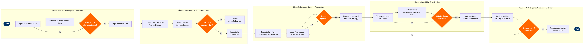

| Step | L4 Step Name | KPI / Target | Pain Point / Risk | Gate |
|---|---|---|---|---|
| 1.1 | Ingest ATPCO competitor fare feed | Feed latency ≤30 min from ATPCO publication; 100% O&D coverage on monitored routes | ATPCO batch update cycles (typically 3× daily) create lag vs. real-time OTA price changes; competitor fares visible on GDS before ATPCO reflects them | |
| 1.2 | Scrape OTA & metasearch displayed fares | Scrape coverage ≥95% of tier-1 competitive routes; data freshness ≤60 min | NDC-sourced fares from competitors bypass ATPCO and are invisible to traditional monitoring tools; requires separate NDC channel scraping capability not standard in OAG | |
| 1.3 | Detect and flag material fare changes | False-positive alert rate ≤5%; mean time to analyst notification ≤15 min from ingestion | Threshold calibration is static; promotional fare launches by LCCs in thin markets trigger high false-positive volumes that overwhelm analyst queues | ⚠ |
| 2.1 | Analyse competitor O&D fare positioning | Analysis turnaround ≤2 hr for tier-1 alerts; ≤8 hr for tier-2 | NRM lacks a native competitor fare visualisation layer; analysts context-switch between NRM and Tableau dashboards, increasing error risk and analysis time | |
| 2.2 | Assess impact on O&D demand forecast | Forecast accuracy within ±5% MAPE post-response on monitored O&Ds | NRM demand models have limited sensitivity to intraday competitor fare moves on ultra-short booking windows (<72 hr); last-minute price wars require manual forecast override | |
| 2.3 | Classify response urgency and route tier | Immediate-class alerts actioned within 4 hr in ≥90% of cases | Revenue contribution rankings in Tableau are refreshed nightly; intraday revenue shifts on high-value routes are not reflected in urgency scoring during the same business day | ⚠ |
| 3.1 | Evaluate inventory availability and load factor | Load factor target ≥83% on relevant departure; RASM ≥ route budget | Opening low fare buckets to match competitor on near-full flights cannibalises higher-yield bookings already in the pipe; NRM bid-price guardrails may not prevent this on short notice | |
| 3.2 | Model fare response scenarios in NRM | Scenario modelling completed within 1 hr of escalation; ≥3 scenarios produced per alert | PROS RM scenario engine requires clean elasticity inputs; thin-route O&Ds with <12 months of data produce unreliable price-sensitivity curves, forcing analyst judgment over model output | |
| 3.3 | Review and approve response strategy | Approval cycle ≤2 hr for immediate-class alerts; sign-off documented in NRM audit trail | Commercial policy guardrails (minimum fare floors, allotment restrictions for corporate accounts) are maintained separately in ATPCO and not surfaced within NRM approval workflow, risking policy violations | ⚠ |
| 4.1 | File revised fares via ATPCO submissions | ATPCO filing completeness 100% for approved O&Ds; filing-to-effective lag ≤3 hr (next ATPCO update cycle) | ATPCO update cycles constrain real-time parity; competitors using direct NDC filing can respond 2–3 hr faster, creating a temporary price-visibility disadvantage in GDS | |
| 4.2 | Configure fare rules, restrictions, and RBDs | Zero ATPCO rule validation errors on submission; rules audit-compliant with IATA Resolution 024 | Complex combinability rules (Cat 10) for interline itineraries require manual review against partner agreements; errors result in GDS pricing rejections and customer-visible mispricing | |
| 4.3 | Verify fare distribution across GDS channels | Fare parity confirmed across ≥3 GDS within 60 min of ATPCO effective time; zero pricing discrepancies on spot-check O&Ds | Travelport GDS cache refresh lags Sabre by up to 45 min post-ATPCO update; customers on Travelport-connected TMCs see stale competitor fares, causing booking leakage during the gap | ⚠ |
| 4.4 | Activate fares in PSS inventory and NDC | NDC offer response includes new fare within 30 min of Altéa activation; booking class availability aligned with approved strategy | Altéa PSS inventory bucket mapping to ATPCO booking class codes requires manual reconciliation when new fare basis codes are introduced; mapping errors cause sell-up failures | |
| 5.1 | Monitor booking velocity post-response | Booking pace recovery to baseline curve within 24 hr on ≥80% of actioned O&Ds | NRM booking-curve comparison uses historical same-departure-day data that may not account for week-of-year seasonality shifts; recovery signals can be misread on holidays or event periods | |
| 5.2 | Assess revenue impact against route budget | Net yield delta ≥0% vs. pre-response baseline within 48 hr; RASM maintained ≥ route budget | Dilution cost from opening low fare buckets is not automatically calculated in NRM; analysts must manually query Redshift to isolate response-attributable revenue changes from organic demand shifts | ⚠ |
| 5.3 | Conduct post-action review and update playbook | Post-action review completed within 5 business days for tier-1 alerts; playbook updated within 10 business days | Competitive response playbooks are maintained as unstructured documents outside RM systems; institutional knowledge of effective response patterns is lost when analysts rotate, and playbook entries are rarely linked to outcome data |